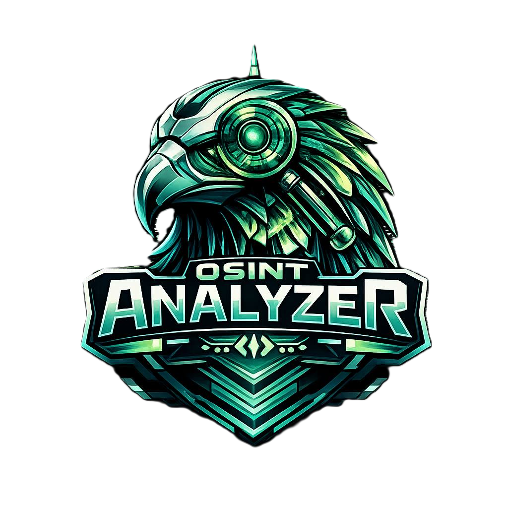

OSINT Analyzer
OSINT Analyzer está pensado para quienes necesitan respuestas rápidas en entornos donde el tiempo y la precisión marcan la diferencia. A partir de un simple dato de partida, la plataforma activa un proceso de análisis y enriquecimiento que amplía la información disponible, conecta fuentes, identifica indicadores relevantes y organiza los resultados en una estructura clara y directamente utilizable. Lo que antes implicaba múltiples consultas, revisiones manuales y horas de trabajo, OSINT Analizer lo convierte en un flujo automatizado que transforma datos dispersos en conocimiento accionable, listo para interpretar, documentar y utilizar desde el primer momento.